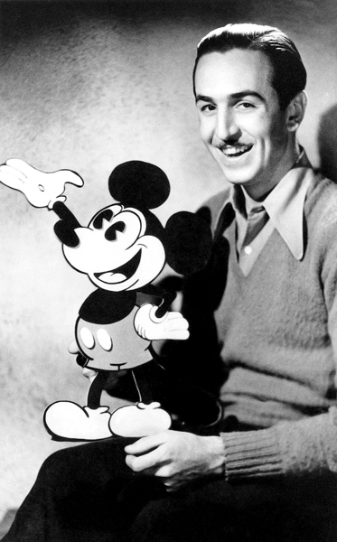
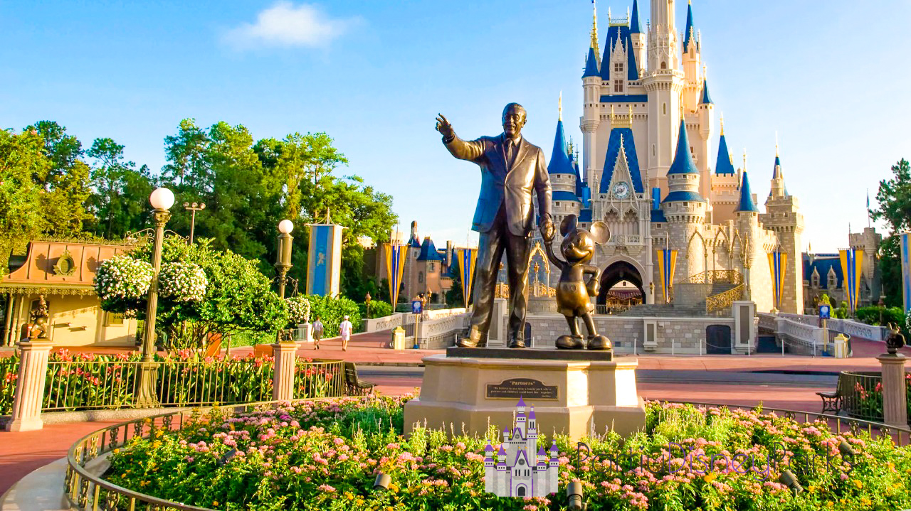

El Mundo Mágico de
DISNEYLAND
Recorriendo Disney
Historia de Disney

Todo empezó con Walter Elias Disney (Chicago, Illinois; 5 de diciembre de 1901-Burbank, California; 15 de diciembre de 1966) fue un empresario, animador, guionista, actor de voz y productor de cine estadounidense. Pionero de la industria de la animación estadounidense, introdujo novedades en la producción de dibujos animados.
Walt Disney nació en Chicago en 1901 y muy pronto demostró interés por dibujar. Asistió a clases de arte siendo niño y trabajó como ilustrador comercial desde los 18 años. Se trasladó a California a inicios de la década de 1920 y allí fundó el Disney Brothers Studio con su hermano Roy. Junto a Ub Iwerks, Walt creó el personaje de Mickey Mouse en 1928, su primer gran éxito y al que él mismo puso voz en un principio. Con el crecimiento de su estudio de animación, introdujo avances como el sonido sincronizado, Technicolor a tres bandas, largometrajes de animación y desarrollos técnicos en las cámaras. Los resultados se pueden ver en películas como Blancanieves y los siete enanitos (1937), Pinocho y Fantasía (ambas de 1940), Dumbo (1941) y Bambi (1942), todas las cuales fomentaron el desarrollo del cine de animación.
En la década de 1950 expandió su negocio hacia los parques de atracciones y en 1955 abrió Disneyland en Anaheim, California. Para financiar este enorme proyecto, diversificó su actividad con programas de televisión como Walt Disney's Disneyland y The Mickey Mouse Club. En 1965 comenzó el desarrollo de un segundo parque temático, Disney World, cuyo corazón iba a ser un nuevo tipo de ciudad, el "Prototipo Experimental de Ciudad del Mañana" (EPCOT). Disney fue un fumador empedernido durante toda su vida y murió víctima de un cáncer de pulmón en diciembre de 1966, antes de que el parque o el proyecto de EPCOT estuvieran acabados.

En privado, Walt Disney era un hombre tímido, autocrítico e inseguro, pero desarrolló una imagen pública de personaje cálido y extrovertido. Era perfeccionista y esperaba que los que trabajaban con él dieran siempre lo mejor de sí mismos. Aunque a veces se le ha tildado de racista o antisemita, muchos de los que le conocieron lo han desmentido. Su reputación cambió en los años posteriores a su muerte, y así pasó de ser visto como alguien que fomentaba los valores patrióticos de su país a un claro representante del imperialismo estadounidense. Sin embargo, sigue siendo una figura importante en la historia del cine de animación y de la cultura de los Estados Unidos, donde es considerado un icono cultural nacional. Sus creaciones cinematográficas siguen siendo vistas y adaptadas, el estudio de cine que fundó y que lleva su nombre sigue manteniendo altos estándares en su producción de entretenimiento popular y los catorce parques de atracciones de Disney abiertos en cuatro países reciben todos los años millones de visitantes.
Walt Disney World Resort
El Walt Disney World Resort, también conocido como Disney World, es un complejo turístico famoso por sus parques temáticos y numerosos hoteles. El complejo es operado por Walt Disney Parks, Experiences and Products y propiedad de The Walt Disney Company.
La construcción empezó en 1967, menos de un año después de la muerte de Walt Disney. El 1 de octubre de 1971, abrió sus puertas el parque conocido como Magic Kingdom; luego se añadieron al complejo los parques temáticos Epcot, Disney's Hollywood Studios y Disney's Animal Kingdom.
Además de los cuatro parques temáticos principales, el complejo cuenta con dos parques acuáticos, seis circuitos de golf, un complejo deportivo, dos centros comerciales, veinticuatro hoteles de Disney, numerosas tiendas, y restaurantes. El área total de la propiedad tiene 12.000 hectáreas (como la ciudad de San Francisco) y es el complejo de parques temáticos más grande del mundo, a pesar de que en la última década se han vendido grandes extensiones de terreno para conjuntos residenciales y otros proyectos, incluyendo el terreno ahora ocupado por la ciudad de Celebration, construida y administrada por Disney.

Se puede acceder al complejo a través de la carretera interestatal 4, por medio de la salida 62B (World Drive), 64B (US 192 West), 65B (Osceola Parkway West), 67B (SR 536 West) y 68 (SR 535 North). Además, en 2006 se abrió una nueva entrada a través de la salida 8 de la State Road 429, conocida como Western Expressway.